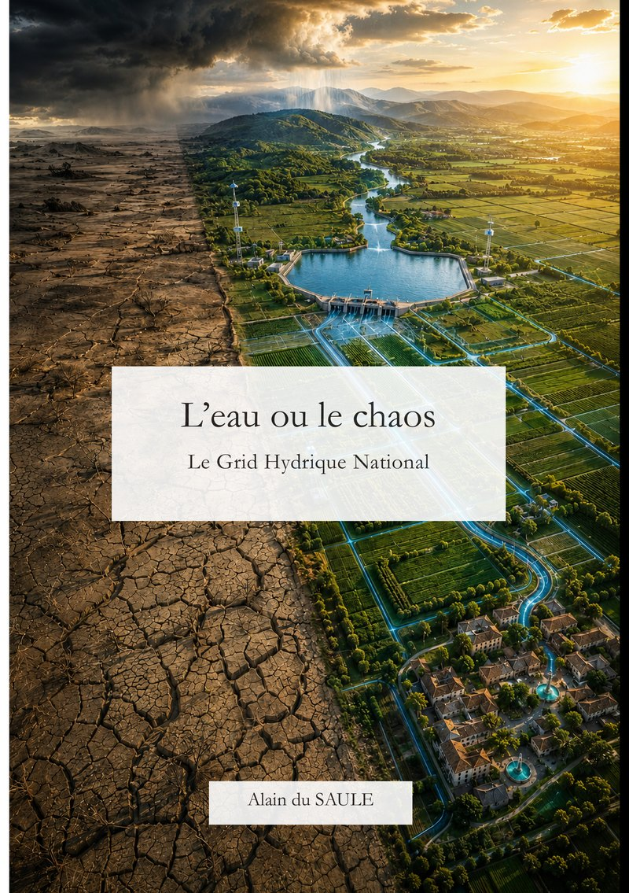

Acte I
Alerte
La France a soif, les chiffres deviennent concrets, la facture monte et l’action publique reste fragmentée.
Manifeste citoyen · Alain du Saule
Le Grid Hydrique National
Et si la France appliquait à l’eau l’ambition qui lui a permis de bâtir un réseau électrique national ? Ce livre rend la crise hydrique compréhensible et met une proposition structurante en débat.

La question au cœur du livre
La France parle de restrictions, de sobriété et de conflits d’usage. Le livre propose de déplacer le regard vers l’infrastructure : stockage, interconnexion, pilotage et solidarité entre les territoires.
Le Grid Hydrique National n’est pas présenté comme une décision déjà prise ni comme une réponse prête à construire demain matin. C’est une proposition citoyenne, destinée à être discutée, éprouvée et confrontée aux savoirs techniques.
Le parcours du lecteur
Onze chapitres structurés pour aller des faits à une vision nationale, puis de la vision aux leviers d’action.
Acte I
La France a soif, les chiffres deviennent concrets, la facture monte et l’action publique reste fragmentée.
Acte II
L’analogie électrique ouvre une autre échelle de réflexion : fonctionnement du Grid, financement et expérimentation territoriale.
Acte III
Citoyens, élus, agriculteurs, assureurs et opérateurs peuvent faire entrer la souveraineté hydrique dans le débat public.
Le Grid en trois verbes
Une logique de réseau, inspirée de la manière dont la France a su mutualiser et sécuriser d’autres infrastructures essentielles.
Constituer des réserves lorsque l’eau est disponible, avec des solutions adaptées aux territoires et aux cycles.
Connecter progressivement les réseaux locaux pour mieux faire face aux déficits et aux excédents.
Observer, prévoir et arbitrer grâce aux données, sans faire d’un algorithme le substitut de la décision publique.
À qui s’adresse le livre ?
Pour comprendre un enjeu vital sans devoir devenir hydrologue ou spécialiste des politiques publiques.
Pour les élus, agents, agriculteurs et acteurs économiques déjà confrontés aux tensions sur la ressource.
Pour celles et ceux qui pensent en systèmes, infrastructures, coopération et temps long.
Sources et méthode
Le livre s’appuie sur des rapports publics, des données institutionnelles et deux passes d’audit factuel. Le Grid, son dimensionnement et son financement restent des hypothèses soumises au débat.
Restrictions, cours d’eau asséchés et coûts de la sécheresse sont reliés à leurs sources ministérielles.
Consulter le SDESLes chiffres et mécanismes sont traduits en conséquences concrètes pour les citoyens et les territoires.
Lire le retour d’expérience 2022L’auteur relie les points et propose un cadre. La validation scientifique, technique et démocratique appartient au débat collectif.
Informations bibliographiques
Papier et ebook
Choisissez librement votre canal. Les informations de prix, de stock et de livraison sont mises à jour par chaque distributeur.
Éditeur · papier et ebook
La librairie de l’éditeur, à l’origine de la publication du livre.
Librairie · papier et ebook
Commander l’édition brochée ou l’ebook ePub.
Librairie · papier et ebook
Retrouver le grand format et l’édition numérique.
Aperçu et référencement
Consulter la fiche bibliographique du livre.
Référence bibliographique
Consulter la déclaration dans les nouveautés éditeurs.
Faire de l’eau une priorité nationale